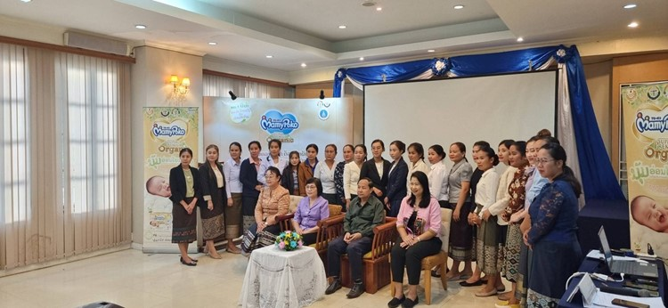
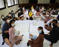
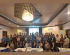
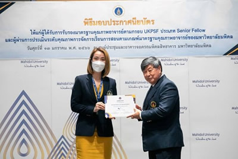

ข่าวกิจกรรม ประจำปี 2566

คณาจารย์จากภาควิชาการพยาบาลสูติศาสตร์-นรีเวชวิทยา คณะพยาบาลศาสตร์ มหาวิทยาลัยมหิดล ได้ร่วมเป็นวิทยากรบรรยาย ในการจัดอบรมโครงการพัฒนาศักยภาพพยาบาลในการดูแลสตรีตั้งครรภ์ คลอด และหลังคลอด แก่พยาบาลผดุงครรภ์ของประเทศสาธารณรัฐประชาธิปไตยประชาชนลาว
อ่านรายละเอียด

วิทยากร หัวข้อ “เทคนิคการบริหารเต้านม เพื่อเพิ่มปริมาณน้ำนม” ผ่านทางช่องทาง Facebook live จัดโดยคณะพยาบาลศาสตร์ ร่วมกับ Mombies club
อ่านรายละเอียด

วิทยากร หัวข้อ “การเตรียมความพร้อมเลี้ยงลูกด้วยนมแม่” ผ่านทางช่องทาง Facebook live จัดโดยคณะพยาบาลศาสตร์ ร่วมกับ Mombies club
อ่านรายละเอียด

วิทยากร หัวข้อ “อาการผิดปกติที่ต้องระวังในขณะตั้งครรภ์” ผ่านทางช่องทาง Facebook live จัดโดยคณะพยาบาลศาสตร์ ร่วมกับ Mombies club
อ่านรายละเอียด

การอบรม “เบาหวานป้องกันได้ในคนท้อง” ครั้งที่ 2/2566
อ่านรายละเอียด

คณาจารย์จากภาควิชาการพยาบาลสูติศาสตร์-นรีเวชวิทยา ได้ร่วมเป็นวิทยากรบรรยาย ในการจัดอบรมโครงการพัฒนาศักยภาพพยาบาลในการดูแลสตรีตั้งครรภ์ คลอด และหลังคลอด แก่พยาบาลผดุงครรภ์ของประเทศสาธารณรัฐประชาธิปไตยประชาชนลาว
อ่านรายละเอียด

ภาควิชาการพยาบาลสูติศาสตร์-นรีเวชวิทยา จัดการอบรม “เบาหวานป้องกันได้ในคนท้อง” ครั้งที่ 1/2566
อ่านรายละเอียด

การยื่นขอรับการประเมินระดับคุณภาพการจัดการเรียนการสอนตามเกณฑ์มาตรฐานคุณภาพอาจารย์ของมหาวิทยาลัยมหิดล (MUPSF)
อ่านรายละเอียด

พิธีมอบประกาศนียบัตรในโอกาสผ่านการประเมินคุณภาพการจัดการเรียนการสอนตามเกณฑ์มาตรฐานคุณภาพอาจารย์ของมหาวิทยาลัยมหิดล
อ่านรายละเอียด
การประชุมวิชาการคณะพยาบาลศาสตร์ ครั้งที่ 32
อ่านรายละเอียด